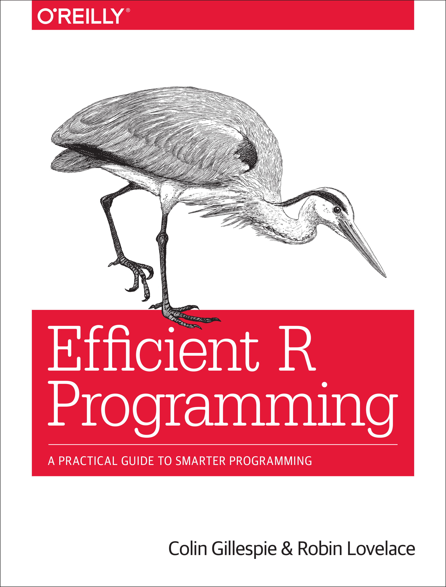

# install.packages("profvis")
library(profvis)
# Create a data frame with 150 columns and 400000 rows
df <- data.frame(matrix(rnorm(150 * 400000), nrow = 400000))
profvis({
# Calculate mean of each column and put it in a vector
means <- apply(df, 2, mean)
# Subtract mean from each value in the table
for (i in seq_along(means)) {
df[, i] <- df[, i] - means[i]
}
})Main reference
Efficient R book by Gillespie and Lovelace, read it here
